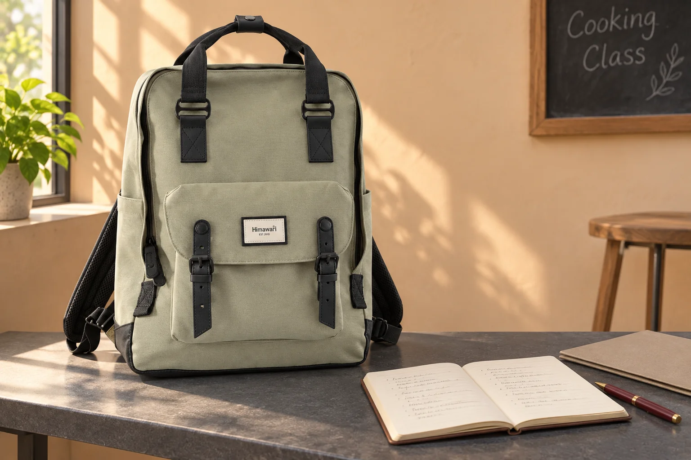
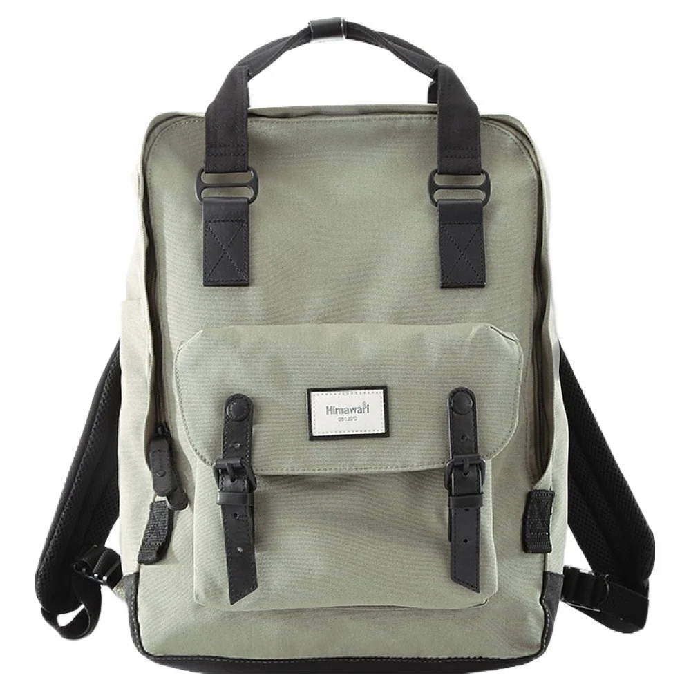

백팩의 앞뒤 폭, 몸을 돌릴 때 살펴보기

백팩을 정면에서 고르면 높이와 너비가 먼저 보입니다. 등에 멘 가방이 뒤로 얼마나 나오는지는 옆모습에서 더 잘 드러납니다. 문을 돌아 들어가거나 의자 사이에서 방향을 바꿀 때에는 그 폭도 몸의 움직임에 포함됩니다. 수납할 물건이 들어가는지 본 뒤 실제로 메고 움직일 공간까지 살펴보면 깊이에 관한 선택이 구체적으로 달라집니다.
가방의 깊이를 비교하려면 현재 쓰는 가방에서 불편했던 장면 하나를 떠올려봅니다. 책상 사이를 지나며 등을 돌렸는지, 문을 잡고 다른 사람을 기다렸는지, 의자에서 가방을 벗어야 했는지 나누어봅니다. 단지 큰 가방이었다는 기억보다 어느 방향이 가까웠는지 남기는 편이 다음 후보를 고를 때 도움이 됩니다. 높이가 불편했던 경우와 앞뒤 폭이 불편했던 경우를 구별할 수 있습니다.
옆으로 나온 모양은 실제 짐과 함께
백팩이 비어 있을 때의 옆모습과 평소 짐을 담았을 때는 다를 수 있습니다. 책과 파일은 납작하게 놓여도 큰 파우치나 용기가 앞쪽으로 겹치면 본체의 모양이 달라집니다. 어떤 물건을 넣은 뒤 깊이가 늘어나는지 하나씩 봅니다. 원래 필요한 물건을 빼서 사진처럼 납작하게 만드는 대신 그 상태를 담을 가방이 맞는지 비교합니다.
앞주머니에 물건을 더한 날에는 그 주머니의 바깥쪽도 함께 봅니다. 본체만 보고 가까운 곳을 통과하려 하면 앞쪽의 돌출된 부분이 빠질 수 있습니다. 옆모습을 거울로 보거나 허락을 구해 촬영하면 어느 부분이 가장 뒤로 나오는지 읽을 수 있습니다. 손에 든 별도 짐이 있다면 가방만 멘 상태와 이동 범위가 다를 수 있다는 점도 같이 봅니다.
Himawari No.1010 제품 정보의 카키 원본에는 네모난 본체와 앞면의 덮개형 주머니가 보입니다. 안내된 외부 크기는 가로 33 × 세로 45 × 폭 15cm입니다. 여기서 폭은 가방의 바깥 규모를 비교할 값이며, 내용물을 넣은 자신의 착용 모습을 대신하지 않습니다. 실제 짐을 담았을 때 앞면의 어느 부분이 뒤로 놓이는지 이어서 살펴볼 수 있습니다.

몸을 돌리기 전 볼 수 있는 공간
좁은 자리를 지날 때는 먼저 앞으로 이어지는 길과 옆에 있는 물건을 봅니다. 가방을 멘 채 갑자기 크게 돌아보기보다 여유가 있는 곳에서 방향을 바꿉니다. 집의 안전한 공간에서 평소 가방을 메고 천천히 움직여보면 등 뒤에 물건이 있다는 느낌을 알아보기 쉽습니다.
문을 여는 상황에서는 몸을 문 쪽으로 기울이며 가방의 방향도 바뀔 수 있습니다. 한 손에 자료가 있으면 움직일 범위가 더 좁아질 수 있으므로 손에 든 물건부터 정리할 수 있습니다. 문 앞에 멈추어 가방을 몸 앞으로 옮길지, 그대로 통과할지 실제 공간을 보고 정합니다. 어느 한 자세를 모든 출입구에 적용하지 않아도 됩니다.
의자 사이를 지날 때에는 앉아 있는 사람의 뒤쪽과 가방이 가까워지는지 봅니다. 자신이 지나갈 너비와 등 뒤 가방이 향할 방향을 같이 생각합니다. 공간이 좁으면 허용된 자리에서 가방을 벗어 손으로 옮기는 방법을 고를 수 있습니다. 그 경우 제품에서 운반용으로 안내한 부위를 사용하고 내려놓을 면까지 먼저 정합니다.
깊이를 줄이는 배치와 물건을 누르는 배치
가방이 두껍게 느껴진다고 외부 끈이나 지퍼로 짐을 강하게 누르는 방식부터 고르지 않습니다. 먼저 단단한 파우치가 파일 앞에 겹쳐 있는지, 위아래로 나눌 자리가 있는지 현재 구조를 봅니다. 물건을 옮긴 뒤에도 정상적으로 닫히고 필요한 것을 꺼낼 수 있어야 합니다. 겉모양이 덜 나온다는 이유만으로 내용물이 눌린 상태를 남기지는 않습니다.
사용하지 않는 옷이나 예비품을 덜 수 있는 날이라면 실제 필요한 묶음부터 다시 정합니다. 반대로 필수품이 차지하는 부피가 크면 더 맞는 깊이의 후보를 찾을 수 있습니다. 깊이가 얕은 가방을 고르려는 목표와 하루의 짐을 운반하는 목표를 함께 봅니다. 별도 운반물을 하나 더 들었을 때 손이 어떻게 바뀌는지도 비교하면 선택의 전체 모습을 보기 쉽습니다.
후보 사이의 외부 폭 차이는 같은 측정 기준인지 읽은 뒤 비교합니다. 제품마다 곡선과 앞주머니 형태가 달라 같은 숫자라도 보이는 옆선은 다를 수 있습니다. 사진과 수치를 함께 두고 어느 부분의 깊이가 궁금한지 질문합니다. 본체 옆모습에 더해 평소 짐을 넣은 자료가 있는지 확인하면 선택에 필요한 정보가 늘어납니다.
가방을 벗은 뒤에도 폭의 쓰임은 남는다
회사에 도착하면 깊이가 있는 백팩을 책상 아래나 선반에 둘 수 있습니다. 본체가 들어가는지에 이어 지퍼를 열 손이 들어갈 자리가 있는지 봅니다. 가방을 꺼내지 않으면 물건을 찾기 어려운 구조라면 매번 이동할 범위도 생각합니다. 이동 중에는 괜찮았던 폭이 놓아둘 공간에서는 다른 조건이 되는 것입니다.
차량 좌석이나 사물함에 둘 계획이라면 해당 장소의 안내와 실제 공간을 확인합니다. 가방을 밀어 넣어 문을 닫기보다 본체와 여밈이 자연스럽게 놓일 자리가 필요합니다. 외부 크기는 후보를 좁힐 자료로 사용하고 실제 공간의 돌출 부위나 문이 닫히는 길까지 대조합니다. 자주 쓰는 장소 하나를 기준으로 보면 깊이에 관한 질문이 막연하지 않습니다.
비교를 마치면 현재 가방보다 앞뒤 폭을 줄이고 싶은지, 같은 폭에서 배치를 바꾸고 싶은지 남겨봅니다. 서 있는 옆모습, 몸을 돌린 순간, 내려놓은 자리 가운데 무엇이 가장 불편했는지 고르면 됩니다. 새 가방을 고른 뒤에도 짐의 종류가 바뀌면 같은 장면을 다시 볼 수 있습니다. 큰지 작은지라는 말에 자신의 움직임을 연결하면 다음 선택의 이유를 설명하기 쉬워집니다.